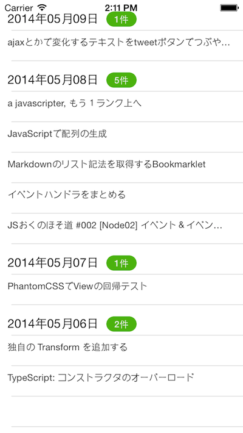

QiitaのWeb APIから取得したデータに対して
というように投稿日別にグループ化する以下の様なサンプルアプリケーションについて紹介します。

説明の都合上、QiitaのWebAPI経由で取得したJSON形式のデータをあらかじめ準備してあるので以下要領で作業をします。
また先程のサンプルアプリで利用したUnderscore.jsに加えて、日付処理をするために、Moment.jsも利用します。
プロジェクト配下のディレクトリ構成は以下の様になります。
├── CHANGELOG.txt
├── LICENSE
├── LICENSE.txt
├── README
├── Resources
│ ├── android
│ ├── app.js
│ ├── iphone
│ ├── mainWindow.js
│ ├── moment.js
│ ├── qiita.js
│ ├── sample.json
│ ├── style.js
│ └── underscore-min.js
├── build
│ ├── android
│ └── iphone
├── manifest
└── tiapp.xml
app.jsとstyle.jsについては特にこれまで同様の処理になってるので、説明を割愛してソースコードのみ以下記載しておきます。
var mainWindow,win;
mainWindow = require("mainWindow");
win = mainWindow.createWindow();
win.open();
exports.mainTable = {
"width": Ti.UI.FULL,
"height": Ti.UI.FULL,
"backgroundColor": "#fff",
"separatorColor": "#ccc",
"left": 0,
"top": 0
};
exports.row = {
"width": Ti.UI.FULL,
"height":40,
"borderWidth": 0,
"className":"entry"
};
exports.detailRow = {
"width": Ti.UI.FULL,
"height":40,
"borderWidth": 0,
"className":"detail"
};
exports.textLabel = {
"width":150,
"height":20,
"top":15,
"left":10,
"color":"#222",
"font":{
"fontSize":16
}
};
exports.detailTextLabel = {
"width":300,
"height":20,
"top":5,
"left":10,
"color":"#444",
"font":{
"fontSize":12
}
};
exports.countLabel = {
"width":40,
"height":20,
"top":15,
"left":140,
"borderRadius":10,
"color":"#eee",
"backgroundColor":"#59BB0C",
"textAlign":"center",
"font":{
"fontSize":12,
"fontWeight":"bold"
}
};
qiita.jsとmainWindow.jsはそれぞれ大幅に変更してるのでソースコード記載しつつ、ポイントにある箇所について順番に解説していきます。
まず、qiita.jsの方ですが、今回はローカルのJSONデータを読み込んで任意の形式に変換するgetItemsGroupByCreatedDate()という関数のみ実装しています。
任意の形式に変換する部分ですが、サンプルのデータから、投稿日をYYYYMMDD形式に変換してその値をグループ化時のkeyとして利用して最終的に以下のような構造を作ります。
[
{
"groupingKey":20140509,
"rawData":[
//投稿日が20140509の投稿情報をまるごと格納
]
},
{
"groupingKey":20140508,
"rawData":[
//投稿日が20140508の投稿情報をまるごと格納
]
}
]
exports.getItemsGroupByCreatedDate = function(){
var sample, file, items, moment, _, i, len, groupingKey,result = [],gropued;
sample = Ti.Filesystem.getFile(Ti.Filesystem.resourcesDirectory, "sample.json");
file = sample.read().toString();
items = JSON.parse(file);
moment = require("moment");
_ = require("underscore-min");
for(i = 0, len = items.length;i <len;i++){
groupingKey = moment(items[i].created_at, "YYYYMMDD").format("YYYYMMDD"); // (1)
result.push({
"groupingKey":groupingKey,
"rawData":items[i]
});
}
gropued = _.groupBy(result,function(item){ // (2)
return item.groupingKey;
});
return gropued;
}
Underscore.jsのgroupBy()の利用方法については、有志の方によるUnderscore.jsの日本語化されたドキュメントがありますので、こちらを合わせて読むと理解が進むかと思います。
https://github.com/enja-oss/Underscore/blob/master/docs/Collection.md
exports.createWindow = function(){
var win = Ti.UI.createWindow({
title:"QiitaViewer"
});
win.add(mainTable);
return win;
};
var style = require("style"),
mainTable = Ti.UI.createTableView(style.mainTable),
qiita = require("qiita"),
items,
rows;
items = qiita.getItemsGroupByCreatedDate();
rows = createRows(items);
mainTable.setData(rows);
function createRows(items){
var style = require("style"),
row,
detailRow,
rows = [],
textLabel,
countLabel,
detailTextLabel,
moment;
moment = require("moment");
for(groupKey in items){
row = Ti.UI.createTableViewRow(style.row);
textLabel = Ti.UI.createLabel(style.textLabel);
countLabel= Ti.UI.createLabel(style.countLabel);
textLabel.text = moment(groupKey,"YYYYMMDD").format("YYYY年MM月DD日");
countLabel.text = items[groupKey].length + "件";
row.add(textLabel);
row.add(countLabel);
rows.push(row);
for(var j = 0; j < items[groupKey].length; j++){
detailRow = Ti.UI.createTableViewRow(style.detailRow);
detailTextLabel = Ti.UI.createLabel(style.detailTextLabel);
detailTextLabel.text = items[groupKey][j].rawData.title;
Ti.API.info(" " + items[groupKey][j].rawData.title);
detailRow.add(detailTextLabel);
rows.push(detailRow);
}
}
return rows;
};